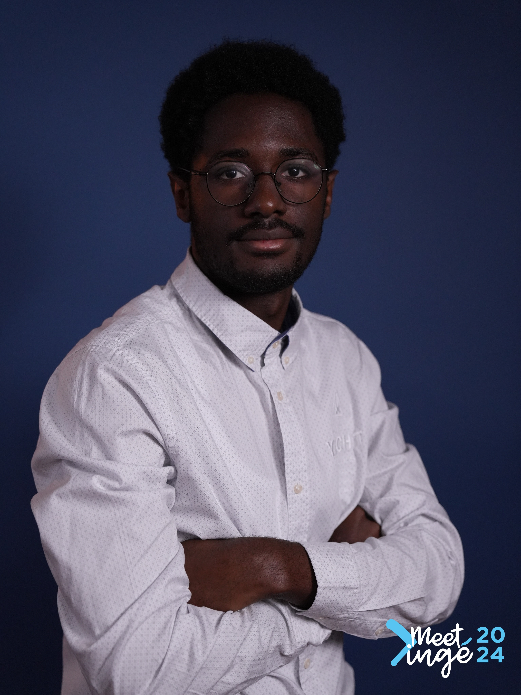

Gregory NGUEKAM

Summary
Étudiant en dernière année à 3iL Ingénieurs, avec une solide formation
issue des classes préparatoires et divers projets académiques. À la
recherche d’un stage de 6 mois en tant que développeur full stack pour
affiner mes compétences, évoluer dans un environnement professionnel et
déboucher sur un CDI.
Education
-
3iL Ingénieurs - Limoges (Depuis 2022)
Cycle ingénieurs en informatique (BAC+5)
-
IUC (2020-2022)
Classes préparatoires MPSI
Work experience
-
- Data scientist - Solidaris Wallonie (De mai 2024 - août 2024)
- Modèle prédictif, indicateurs de retard & analyse des tendances Management.
Skills
React - Angular - Node.js - Springboot - Vue.js